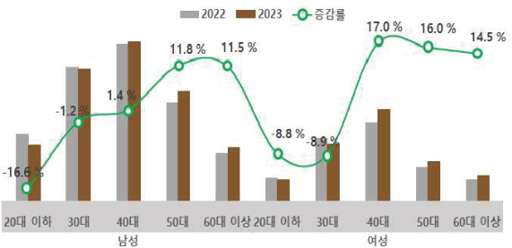
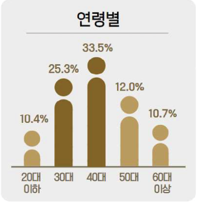

<div class="wireframe-5">
  <div class="frame-10">
    <div class="frame-6">
      <div class="layer-1">
        
      </div>
    </div>
    <div class="div">● 신청인 연령</div>
    <div class="_40-33-5-40-40-17-0-50-16-0">
      연령별로는 40대(33.5%)이 다수를 차지, 전년 대비 40대 이상 연령층 증가,
      40대 여성(17.0%) 및 50대 여성(16.0%)이 가장 많이 증가
    </div>
  </div>
  <div class="rectangle-7"></div>
  <div class="layer-12">
    
  </div>
  <div class="div2">● 신청인 성별</div>
  <div class="_68-3">성별로는 남성(68.3%)이 다수를 차지</div>
</div>
